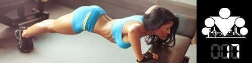
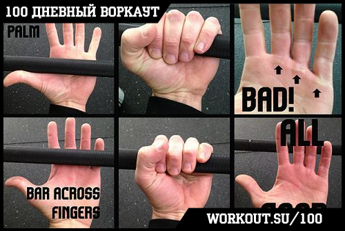
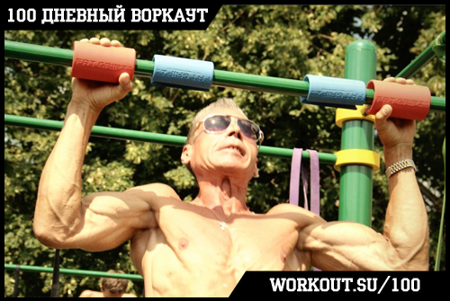
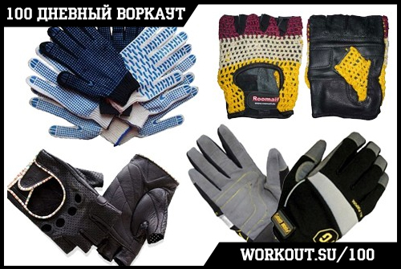
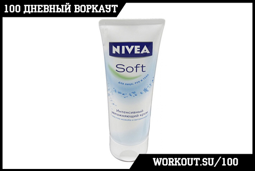

День 17. Мозоли на руках

В процессе тренировок на турниках и брусьях абсолютно у всех рано или поздно появляются мозоли. Это неизбежно.
Но, к сожалению, далеко не все знают, что с ними нужно обращаться бережно. И поэтому они могут доставлять много неприятностей.
Наша задача, за время 100 дневной программы дать вам по максимуму полезной информации, поэтому в сегодняшнем инфо-посте я хочу поговорить с вами о том,
как минимизировать ваши проблемы с мозолями, а то и вообще свести их на нет.
4 помощника в борьбе с мозолями от турника
1) Хват. Для хвата лучше использовать пальцы, а не ладонь руки. Потому что именно натирание ладоней как раз и вызывает появление мозолей.
Конечно, этот способ требует большей силы кистей, предплечий и особенно пальцев, и поначалу будет тяжело, но в конечном итоге потом все окупится.
Вот картинка для наглядности:

2) Толщина перекладины. Из школьного курса физики (да-да, шикарный предмет был, зря вы его не любили!) вы знаете, что сила давления обратно пропорциональна площади,
на которую это давление оказывается. Таким образом, если мы увеличим площадь контакта вашей руки с перекладиной, то уменьшим нагрузку на кожу и снизим вероятность возникновения мозолей.

Этого можно добиться двумя способами:
- Найти толстую перекладину и подтягиваться на ней
- Увеличить толщину стандартной перекладины с помощью
расширителя грифа или простого полотенца (обмотать)
Выбирайте тот из способов, который вам больше по душе и вперед!
3) Перчатки. Используйте перчатки, которые подходят для ваших тренировок. В этом плане можно выделить 2 варианта:
-
* когда происходит вращение руки вокруг перекладины (выходы силой),
-
* когда перекладина в руке находится в фиксированном положении (подтягивания или статические упражнения).

В первом случае нужны перчатки с защитной мягкой прокладкой у фаланг пальцев и на ладони, именно она защищает от возникновения мозолей.
Так же у твоих перчаток для тренировок не должен быть слишком большой коэффициент сцепления с поверхностью, потому что ранее мы уже писали о том, к чему приводит сила трения!
Во втором случае тебе достаточно перчаток, обеспечивающих хорошее сцепление с перекладиной, потому что таким образом снизится нагрузка на кожу.
Радикальным вариантом перчаток для второго случая являются
накладки GRIPAD,
которые не только намертво фиксируют руку на турнике, но ещё и имеют несколько сантиметров защитной поверхности,
полностью спасающих руку от мозолей.
4) Крем для рук. Используйте лосьон или крем (подойдет любой), чтобы ваши ладони были мягкими, потому что сухая кожа чаще трескается, ломается, рвется,
и вообще мешать тренироваться.

Вот такие дела. Главная мысль, которую я хотел бы донести до вас заключается в том, что хотя мозоли и неизбежны, это не значит, что вам нужно от них страдать ;)
======> День 18. Тренировки в ХОЛОД и в ЖАРУ